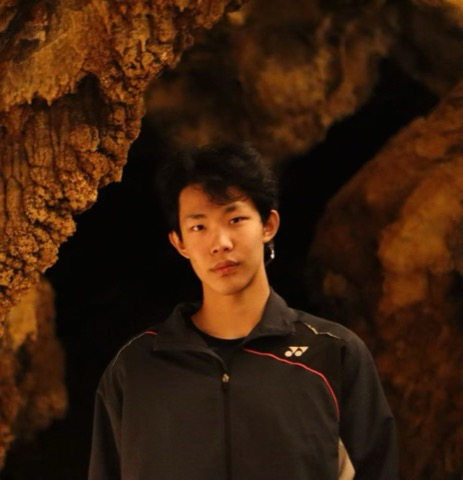

Kaiwen Li
- Carnegie Mellon University
- Email: kl5 [at] andrew [dot] cmu [dot] edu
- GitHub: @KaiwenLi2007
- LinkedIn: Kaiwen Li
- Location: Pittsburgh, PA
I am an undergraduate student at Carnegie Mellon University, studying mathematics and computer science. I am currently a Mathematics major (Discrete Mathematics and Logic) in the Mellon College of Science, and I am transferring to the School of Computer Science in Spring 2027. I expect to graduate in May 2029. Before CMU, I went to Lord Byng Secondary School in Vancouver, BC. I also enjoy competitive programming and am an Expert on Codeforces (rating 1644).
Research
I am interested in logic and theoretical computer science. From May to September 2026, I worked with Prof. Richard Statman on six problems in combinatory logic about termination, confluence, decidability, and finite generation. I solved three of them, made partial progress on two more, and wrote up the results in a 13-page report. Along the way, I wrote a Python term-reduction program that checks derivations automatically, and used it to search thousands of closed terms with up to five atoms for counterexamples to the unsolved cases.
Projects
I also like building things. A few of them:
- Bing Beats, an app for discovering music by country and year.
- MegaGem Live, an auction-strategy game against two AI bidders.
More on the projects page.
Education
-
Carnegie Mellon University, 2025 – present
B.S. in Mathematics (Discrete Mathematics and Logic), Mellon College of Science; transferring to the School of Computer Science in Spring 2027. Dean's List, Fall 2025 and Spring 2026. -
Lord Byng Secondary School, Vancouver, BC, 2021 – 2025
High school diploma.
Competitions, programs, and events I have taken part in are on the competitions & events page.
Experience
-
ScottyLabs, Aug 2026 – present
Software Engineer, Technical Committee. Working on Dalmatian, a TypeScript Discord bot that helps incoming CMU students look up courses, course evaluations, and dining; fixing connection errors and missing-data bugs reported by users. -
Department of Mathematical Sciences, CMU, Oct 2026 – present
Grader for Introduction to Mathematical Concepts: weekly homework, exams, and questions on Piazza. -
Carnegie Mellon University, May – Sep 2026
Undergraduate Researcher with Prof. Richard Statman, on combinatory logic (see Research above). -
Kerrisdale Academy, Vancouver, BC, Mar 2022 – Aug 2025
Teaching Assistant & Consultant. Taught Python, Java, AP Statistics, AP Calculus BC, and AP Physics C one-on-one.
Miscellaneous
- Outside of class I snowboard (I am a CASI-certified instructor), play badminton, go fishing, and play Texas Hold'em and Balatro.
- I speak English and Mandarin, and some Spanish.